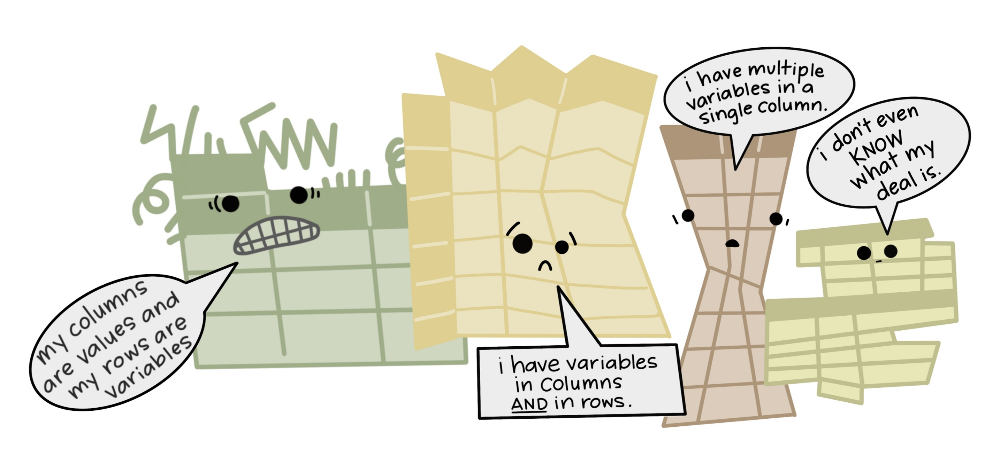

Environmental Data Analysis and Visualization
Warm-up activity
Create a new R project for today’s class
Create a new Quarto document for today’s lecture/lab.
Create a first heading entitled “Warm up activity”
Warm-up activity, pt 2
Download the GSS.csv dataset from Canvas and load it into R as a tibble from your Quarto document
Have a look at sparts and income16 variables as a table and/or visualization. Based on the range of unique values, what might these data represent?
Go to the links on Canvas and take a look at the metadata for each variable. Can you think of a way to modify the data to get a meaningful plot out of it?
Dataset of the Day
Coursekeeping
Coding exercise 2 is now available on Canvas, due Monday!

the-decoder.com
Datasets
Data in the field

Data in the field

Messy data
The process of data entry is often designed and conducted with limited consideration given to the process of data analysis.
https://openscapes.org/blog/2020-10-12-tidy-data/
Tidy data principles
Each variable forms a column
Each observation forms a row
Each cell contains a single value
After Wickham, H. 2014. Tidy data. The Journal of Statistical Software 59.
Vectorization
Querying

Consistency
Ease of identification and re-use
Activity: A mess of data
Create a new heading in your Quarto document for this activity. Download the fellsTravelData.csv file from Canvas and read it in to R. Spend a couple of minutes looking over the data.
friendsofthefells.org
Exploring the data
Compare university year to drive time.
Exploring the data
Compare university year to drive time.
Exploring the data
Compare university year to drive time.
Exploring the survey data
Compare university year to public transit time.
Exploring the survey data
Compare university year to public transit time.
Exploring the survey data
Compare mode of transportation to time spent in transit.
Exploring the survey data
Compare mode of transportation to time spent in transit.
Data wrangling: the big three
Column headers are values, not variable names.
Data wrangling: the big three
Multiple variables are stored in a single column.
Data wrangling: the big three
Variables stored in both rows and columns.
 ## Into the tidyverse
## Into the tidyverse
Data wrangling in the tidyverse

epirhandbook.com/en/pivoting-data.html
Data wrangling in the tidyverse
# A tibble: 64 × 4
universityYear walkTime driveTime ptTime
<chr> <dbl> <dbl> <dbl>
1 first 65 12 37
2 first 60 12 51
3 first 66 10 33
4 first 58 14 60
5 first 70 12 44
6 first 62 11 40
7 first 62 11 52
8 first 57 9 60
9 first 66 11 50
10 first 66 11 55
# ℹ 54 more rowsData wrangling in the tidyverse
fellsData2<-pivot_longer(
data=fellsData,
cols=walkTime:ptTime,
names_to="method",
values_to="time"
)
fellsData2# A tibble: 192 × 3
universityYear method time
<chr> <chr> <dbl>
1 first walkTime 65
2 first driveTime 12
3 first ptTime 37
4 first walkTime 60
5 first driveTime 12
6 first ptTime 51
7 first walkTime 66
8 first driveTime 10
9 first ptTime 33
10 first walkTime 58
# ℹ 182 more rowsData wrangling in the tidyverse
fellsData2<-pivot_longer(
data=fellsData,
cols=walkTime:ptTime,
names_to="method",
values_to="time",
names_pattern = "(.*)Time"
)
fellsData2# A tibble: 192 × 3
universityYear method time
<chr> <chr> <dbl>
1 first walk 65
2 first drive 12
3 first pt 37
4 first walk 60
5 first drive 12
6 first pt 51
7 first walk 66
8 first drive 10
9 first pt 33
10 first walk 58
# ℹ 182 more rowsData wrangling in the tidyverse
Pipes in R
The pipe operator %>% allows us to combine multiple functions into an ordered set of transformations.
Pipes in R
# A tibble: 32,735 × 16
year month day dep_time dep_delay arr_time arr_delay carrier tailnum
<int> <int> <int> <int> <dbl> <int> <dbl> <chr> <chr>
1 2013 6 30 940 15 1216 -4 VX N626VA
2 2013 5 7 1657 -3 2104 10 DL N3760C
3 2013 12 8 859 -1 1238 11 DL N712TW
4 2013 5 14 1841 -4 2122 -34 DL N914DL
5 2013 7 21 1102 -3 1230 -8 9E N823AY
6 2013 1 1 1817 -3 2008 3 AA N3AXAA
7 2013 12 9 1259 14 1617 22 WN N218WN
8 2013 8 13 1920 85 2032 71 B6 N284JB
9 2013 9 26 725 -10 1027 -8 AA N3FSAA
10 2013 4 30 1323 62 1549 60 EV N12163
# ℹ 32,725 more rows
# ℹ 7 more variables: flight <int>, origin <chr>, dest <chr>, air_time <dbl>,
# distance <dbl>, hour <dbl>, minute <dbl>Pipes in R
# A tibble: 2,610 × 16
year month day dep_time dep_delay arr_time arr_delay carrier tailnum
<int> <int> <int> <int> <dbl> <int> <dbl> <chr> <chr>
1 2013 1 1 1817 -3 2008 3 AA N3AXAA
2 2013 1 23 2024 37 2141 29 EV N17115
3 2013 1 15 1626 -3 1941 10 B6 N594JB
4 2013 1 17 626 -4 846 3 US N554UW
5 2013 1 8 902 -3 1006 -17 B6 N281JB
6 2013 1 15 1947 167 2241 171 AA N5EGAA
7 2013 1 1 1454 -4 1554 -21 EV N11544
8 2013 1 30 1306 -9 1430 -1 EV N13969
9 2013 1 4 1942 -3 2249 -40 B6 N637JB
10 2013 1 8 1859 -6 2158 -27 AA N322AA
# ℹ 2,600 more rows
# ℹ 7 more variables: flight <int>, origin <chr>, dest <chr>, air_time <dbl>,
# distance <dbl>, hour <dbl>, minute <dbl>Data pipelines
Pipelines start with raw data (e.g., tibble) as the input
This table is passed as the first argument to the next function (so they don’t need the data argument)
The result of a pipeline is a dataset that can be fed into visualizations and analysis.
Data pipelines
Data pipelines
nycflights %>%
mutate(speed = distance / air_time * 60) %>%
select(year:day,dep_time,carrier,flight,speed) %>%
filter(month==1) %>%
unite(col="Date",c(month,day,year),sep="/")# A tibble: 2,610 × 5
Date dep_time carrier flight speed
<chr> <int> <chr> <int> <dbl>
1 1/1/2013 1817 AA 353 319.
2 1/23/2013 2024 EV 4412 319.
3 1/15/2013 1626 B6 369 414
4 1/17/2013 626 US 1433 311.
5 1/8/2013 902 B6 56 340.
6 1/15/2013 1947 AA 575 396.
7 1/1/2013 1454 EV 4390 363.
8 1/30/2013 1306 EV 4120 277.
9 1/4/2013 1942 B6 645 466.
10 1/8/2013 1859 AA 21 441.
# ℹ 2,600 more rowsData pipelines
“I want a table with ID Number, Diameter in mm, and number of rings on top 100 abalone by ring count.”
rawData<-read_csv("data/abalone.csv")
rawData %>%
mutate(diameter_mm=diameter * 200) %>%
select(...1,diameter_mm,rings) %>%
slice_max(order_by=rings,n=100)# A tibble: 136 × 3
...1 diameter_mm rings
<dbl> <dbl> <dbl>
1 481 117 29
2 2109 107 27
3 2210 93 27
4 295 99 26
5 2202 98 25
6 3150 108 24
7 3281 108 24
8 314 94 23
9 315 97 23
10 502 104 23
# ℹ 126 more rowsCan I use pipes with ggplot2?
Can I use pipes with ggplot2?
YES!
Can I use pipes with Base R?
Can I use pipes with Base R?
YES!
Can I use pipes with Base R?
YES!*
Can I use pipes with Base R?
YES!*
rawData %>%
mutate(wholeWeight=weight.whole * 200) %>%
mutate(shuckedWeight=weight.shucked * 200) %>%
select(wholeWeight,shuckedWeight) %>%
{sum(.$wholeWeight)}[1] 692331.2*certain rules apply when first argument is not a table, or when referencing column names
Can I use pipes for analyzing and modeling data?
YES!
rawData %>%
mutate(diameter_mm=diameter * 200) %>%
select(...1,diameter_mm,rings) %>%
lm(rings ~ diameter_mm, data=.) %>%
summary()
Call:
lm(formula = rings ~ diameter_mm, data = .)
Residuals:
Min 1Q Median 3Q Max
-5.1868 -1.6932 -0.7200 0.9066 15.9999
Coefficients:
Estimate Std. Error t value Pr(>|t|)
(Intercept) 2.318574 0.172737 13.42 <2e-16 ***
diameter_mm 0.093350 0.002057 45.37 <2e-16 ***
---
Signif. codes: 0 '***' 0.001 '**' 0.01 '*' 0.05 '.' 0.1 ' ' 1
Residual standard error: 2.639 on 4175 degrees of freedom
Multiple R-squared: 0.3302, Adjusted R-squared: 0.3301
F-statistic: 2059 on 1 and 4175 DF, p-value: < 2.2e-16Summing up
Data messiness can arise in a number of ways from a variety of sources, but will inevitably slow the process
Data that follows tidy principles enables vectorization, querying, consistency, and ease of re-use
As data scientists, we need to develop practices for quickly manipulating and transforming datasets to be more amenable to analysis and visualization
Next time
Visualizing a wider range of data relationships
Fine controls with
ggplot2Time is weird